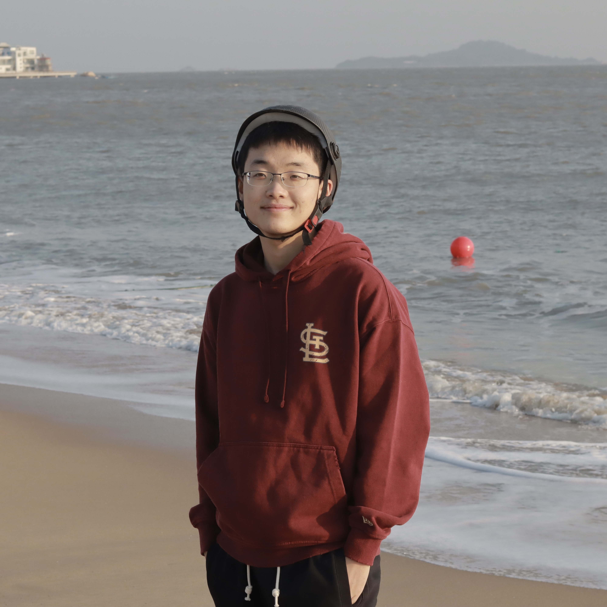
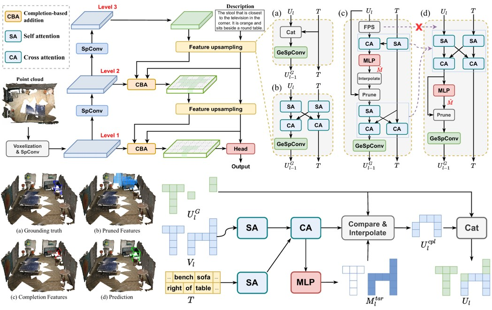
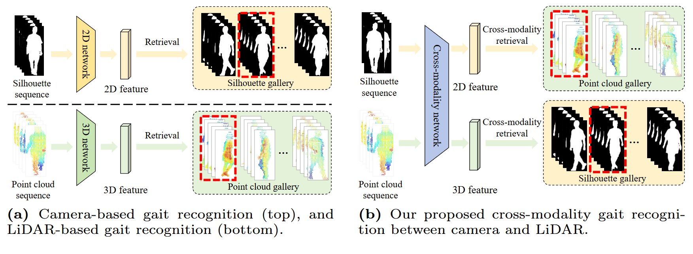
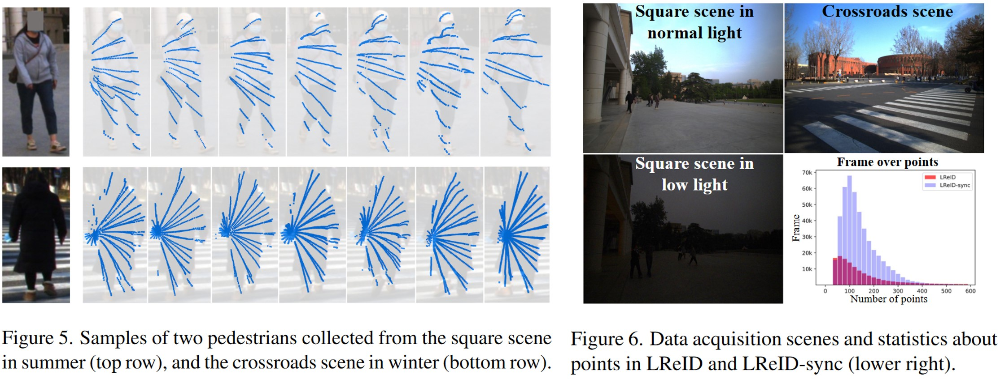

|
Wenxuan Guo | 郭文轩
I am a third-year Ph.D. student in the Department of Automation at Tsinghua University, advised by
Prof. Jianjiang Feng and
Prof. Jiwen Lu.
In 2022, I obtained my B.Eng. in the XUTELI School, Beijing Institute of Technology.
My research interests lie in computer vision. My current research focuses on
3D scene understanding and embodied intelligence.
Email /
CV /
Google Scholar /
Github
|

|
|
News
2025-2: TSP3D is accepted to CVPR2025 (Rating: 555)!!
|
|

|
TSP3D: Text-guided Sparse Voxel Pruning for Efficient 3D Visual Grounding
Wenxuan Guo*,
Xiuwei Xu*,
Ziwei Wang,
Jianjiang Feng,
Jie Zhou,
Jiwen Lu
Computer Vision and Pattern Recognition (CVPR), 2025 (Rating: 555)
[arXiv]
[Code]
[中文解读]
We propose TSP3D, an efficient multi-level convolution architecture for
3D visual grounding. TSP3D achieves superior performance compared
to previous approaches in both accuracy and inference speed.
|
|

|
CL-Gait: Camera-LiDAR Cross-modality Gait Recognition
Wenxuan Guo*, Yingping Liang*, Zhiyu Pan, Ziheng Xi,
Jianjiang Feng,
Jie Zhou
European Conference on Computer Vision (ECCV), 2024
[arXiv]
[Code]
We propose CL-Gait, the first cross-modality gait recognition framework between camera
and LiDAR. We propose a contrastive pre-training method to align the feature spaces
of the two modalities, along with a large-scale data generation strategy.
|
|

|
ReID3D: LiDAR-based person re-identification
Wenxuan Guo, Zhiyu Pan, Yingping Liang, Ziheng Xi, Zhicheng Zhong,
Jianjiang Feng,
Jie Zhou
Computer Vision and Pattern Recognition (CVPR), 2024
[arXiv]
[Code]
[中文解读]
We propose ReID3D, a LiDAR-based ReID framework that utilizes a pre-training strategy to
retrieve features of 3D body shape. Additionally, we build LReID — the first LiDAR-based
person ReID dataset, which is collected in several outdoor scenes with natural variations.
|
|
{kind=link}